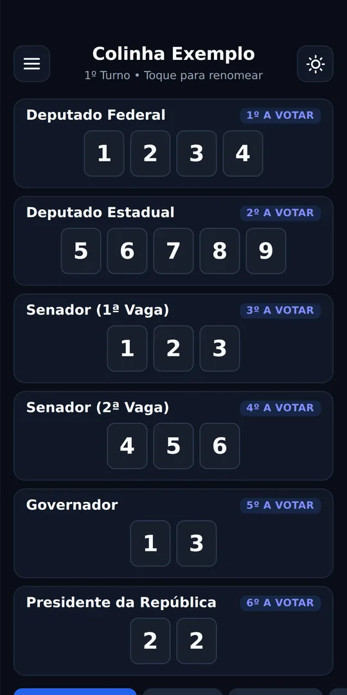
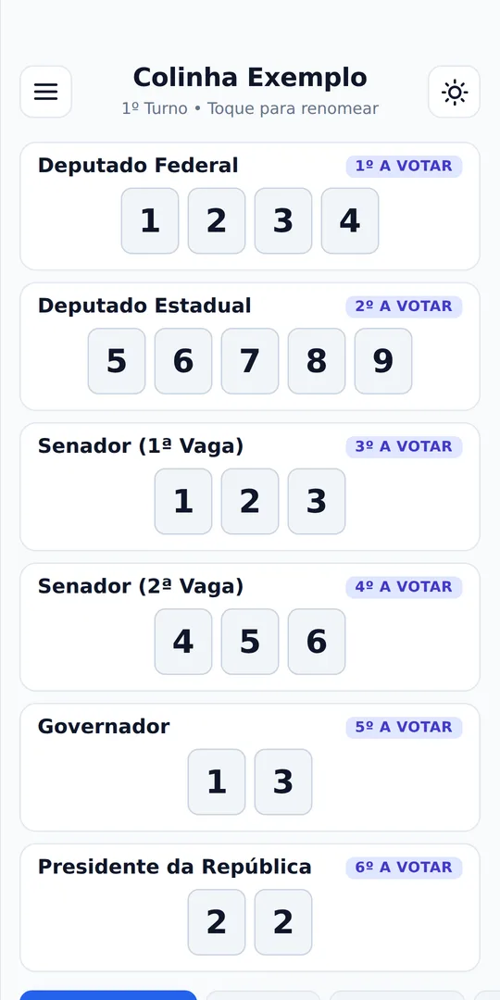
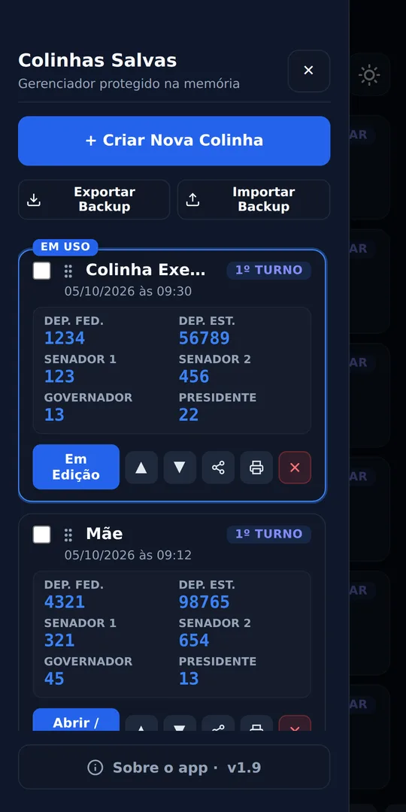
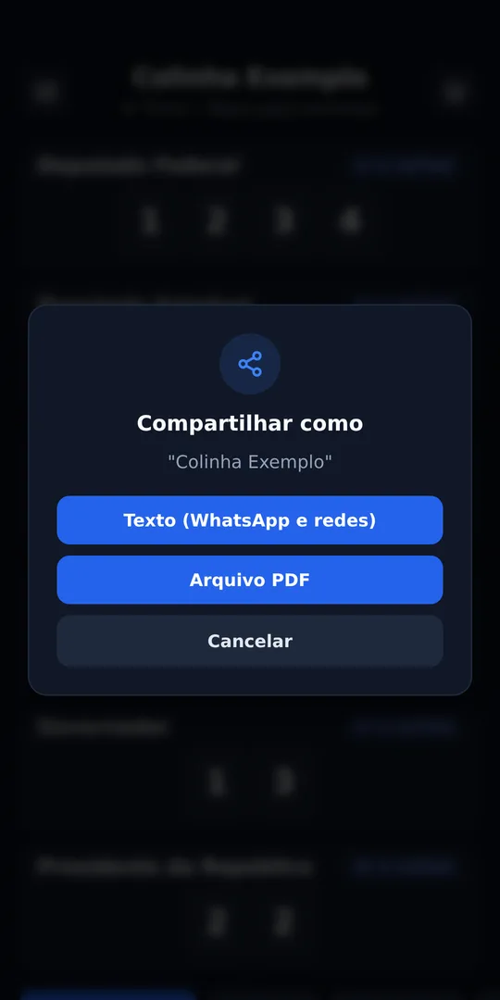
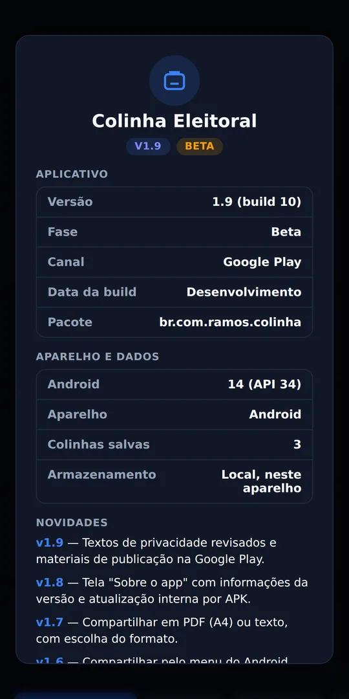

Várias colinhas
Uma para você, outra para a família. Dê um nome, mude a ordem arrastando e escolha o 1º ou o 2º turno.
App Android · Beta 1.9
Anote o número de cada cargo, confira antes de sair de casa e leve do jeito que preferir: no celular, em PDF ou impressa. Sem cadastro, sem internet, sem coleta de dados.
Brincadeira para mostrar o app. Não é a urna eletrônica, não registra voto e nada do que você digitar aqui sai do seu navegador.
Como a colinha é organizada
Cada cargo tem o número exato de quadradinhos que você vai digitar. Você preenche uma vez, confere com calma e na hora é só seguir a lista.
No 2º turno, a colinha mostra só Governador e Presidente, e o app renumera a ordem (1º e 2º). Os dígitos dos cargos que ficam de fora continuam guardados caso você volte para o 1º turno.
O que o app faz
Uma para você, outra para a família. Dê um nome, mude a ordem arrastando e escolha o 1º ou o 2º turno.
Envie em texto bem formatado ou em PDF, por qualquer aplicativo que você tenha no celular.
Uma folha limpa por colinha, ou várias por página. Abre o gerenciador de impressão do Android, com opção de salvar em PDF.
Exporte suas colinhas e importe em outro aparelho, mesclando com as que já existem ou substituindo tudo.
Nada depende de conexão. Abra dentro da seção eleitoral, no elevador ou em área sem sinal.
Tema claro e escuro, dígitos grandes e um botão para limpar cada cargo sem mexer nos outros.
Telas
Os números nas imagens são exemplos fictícios.





Privacidade
Números de candidatos dizem muito sobre uma pessoa. Por isso o app foi feito para não saber nada sobre você.
coletados ou enviados. Sem conta, sem login, sem anúncios e sem ferramentas de rastreamento.
As colinhas ficam guardadas no seu aparelho. Compartilhar, exportar e imprimir só acontecem quando você pede.
O app funciona totalmente offline e não precisa de internet para nenhuma função.
Download · versão beta
O app está em fase de testes. Ele já faz tudo o que está nesta página, mas ainda pode ter detalhes a ajustar. Sua opinião ajuda a deixá-lo pronto para a loja.
Baixar na página de versões APKVersão para a Google Play: em preparação.
Dúvidas frequentes
Não. O Colinha Eleitoral é independente e não tem vínculo com a Justiça Eleitoral, o TSE, partidos ou candidatos.
Não. Ele é só um caderno para anotar os números. O voto acontece exclusivamente na urna, e vale sempre conferir o número do candidato na tela da urna antes de confirmar.
Não. Nada é enviado. Se você compartilhar uma colinha, ela segue apenas para o aplicativo que você escolher no menu do Android.
No menu, use “Exportar backup” para gerar um arquivo e “Importar backup” no outro aparelho. Se já houver colinhas lá, você escolhe entre mesclar e substituir.
Porque está em teste com uso real. Quando os ajustes terminarem, ele sai da fase beta e segue para a Google Play.
Abra uma ocorrência na página do projeto ou escreva para ramosbiro@gmail.com, contando o modelo do celular e o que aconteceu.